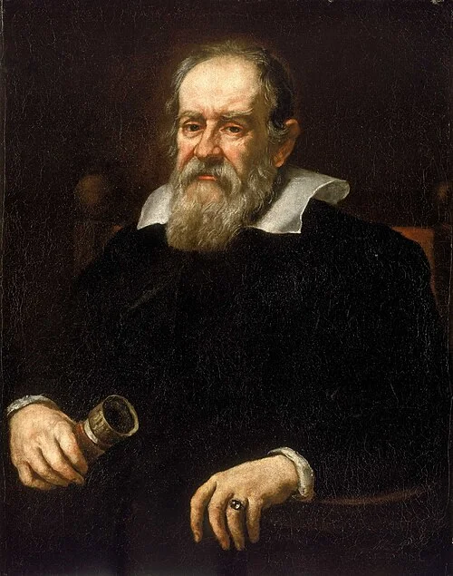
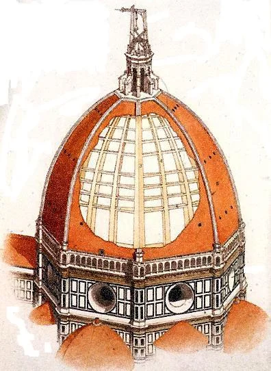

In 1588, a twenty-four-year-old mathematics lecturer stood before the Florentine Academy and did something odd. He presented two lectures on the size and shape of Hell.
Not Hell in the abstract. Hell as Dante Alighieri had built it in the Inferno: a cone-shaped pit beneath Jerusalem, tapering down through nine circles to the frozen lake at the centre of the Earth, where Lucifer stands embedded in ice. The young lecturer wanted exact numbers. Depth in braccia. The angle of the funnel's walls. The height of the devil himself. His name was Galileo Galilei, and he had not yet looked through a telescope.
The lectures were a bid for a job. Galileo needed a position at the University of Pisa, and the Florentine Academy offered a stage. His topic was not random. For more than a century, Florentine scholars had been arguing about the architecture of Dante's underworld. Two camps had formed around two incompatible blueprints, and the dispute had grown heated enough to attract serious intellectual attention.
The geometry of damnation
The first blueprint belonged to Antonio Manetti, a fifteenth-century Florentine polymath and biographer of Brunelleschi. Manetti read the Inferno as an engineering document. He extracted coordinates from Dante's text, cross-referenced geographical clues, and produced a detailed model: the pit opened beneath Jerusalem, its rim spanning a radius equal to the distance from Jerusalem to the centre of the Earth. Each circle narrowed according to a consistent geometric ratio. Manetti's Hell was enormous, orderly, and mathematically coherent.
The rival scheme came from Alessandro Vellutello, a sixteenth-century commentator from Lucca. Vellutello thought Manetti's version was far too large. His own Hell was smaller, tucked closer to the Earth's core, with different proportions and a tighter geometry. The two models disagreed on nearly every measurement. They could not both be right, assuming either could be "right" about a fictional cavern.

Galileo sided with Manetti. His argument was not literary but structural. He worked through the geometry step by step, calculating the dimensions of each circle, the thickness of the vaulted ceilings between levels, and the overall proportions of the cone. He treated Dante's poem the way an architect might treat a set of specifications: seriously, precisely, and without embarrassment.
The lectures impressed their audience. Galileo demonstrated a command of spatial reasoning that went well beyond what the question required. He did not simply endorse Manetti's numbers; he refined them. Where Manetti had been vague, Galileo supplied calculations. Where Manetti had guessed, Galileo derived.
The question was not whether Hell existed, but whether its roof could stand.
But the most interesting part of the lectures involved a problem Galileo had not expected to find. If Hell's ceiling was a vaulted shell of rock spanning the distance Manetti claimed, could it support its own weight? The span was vast. Galileo compared it to the largest dome he knew: Filippo Brunelleschi's dome over the Florence Cathedral, finished in 1436 and still, in Galileo's day, the largest masonry dome in the world.
A dome over the abyss
Brunelleschi's dome spans about 45 metres. Manetti's Hell required a roof hundreds of times wider. Galileo reasoned by analogy: if you scale a dome up, its weight increases faster than its strength. A small dome stands; the same dome enlarged collapses. The principle is sound. It anticipates what engineers now call the square-cube law, the relationship between surface area and volume that governs structural limits at every scale.

Galileo did not resolve the contradiction in his 1588 lectures. He noticed it, filed it away, and moved on. Years later, in the Discorsi (1638), he returned to the problem in full generality. There he proved that structures cannot be scaled up indefinitely; geometry imposes hard limits on size. The bones of an elephant are proportionally thicker than the bones of a mouse for exactly this reason.
Mark Peterson, in his 2011 book Galileo's Muse, argues that the Inferno lectures were more than a young man's audition piece. Peterson's thesis is that Galileo's early training in literature, art, and proportion shaped his later scientific thinking in ways that historians have underestimated. The dome problem, born from a literary exercise, became a cornerstone of the new physics. Galileo's route to empirical science passed through Dante.
The irony is hard to miss. Galileo's most famous troubles came from insisting that the Earth moved, a claim the Church considered heretical. His earliest public success came from insisting that a fictional pit beneath Jerusalem had real structural properties. In both cases he applied the same method: take the claim seriously, work out the geometry, and see what follows.
Peterson's reading has its sceptics. Some historians think it overstates the connection, that the Inferno lectures were simply conventional humanist scholarship, and that Galileo's physics grew from other roots. The debate continues. What no one disputes is that the lectures reveal a mind already working the way it would work for the next fifty years: with precision, confidence, and an unshakable belief that the physical world (real or imagined) answers to mathematics.
Galileo got the job at Pisa. He held it for three years before leaving for Padua, where he would do his greatest work. The Inferno lectures survived in manuscript, largely forgotten until the twentieth century. They are strange documents, half literary criticism and half applied geometry, belonging fully to neither category. They sit at the border between the humanities and the sciences, a border that Galileo did not yet know he would spend his life redrawing.